Việc đầu tiên trong quản lý dữ liệu trên máy tính là tạo thư mục để có thể lưu các dữ liệu như tệp tin hay dữ liệu để có thể thao tác và lưu trữ trên máy tính.
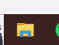
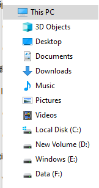
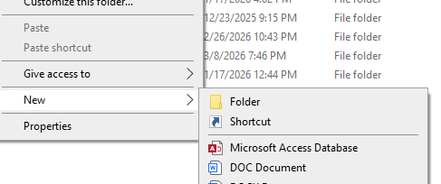
Sau khi có thư mục, em sẽ truy cập vào thư mục đã tạo và tạo các tệp tin để lưu trũ dữ liệu và cũng như thao tác trên thư mục và file.
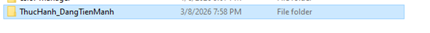
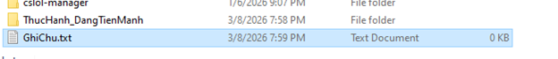
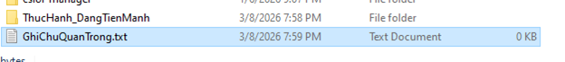
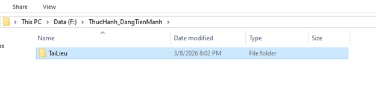
Tiếp đến là các thao tác như sao chép tệp tin và cũng như là di chuyển tệp tin
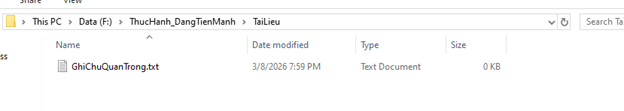
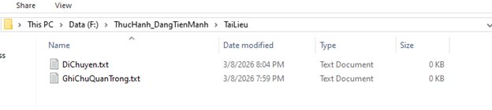
Cuối cùng là thao tác xóa và khôi phục tệp tin.
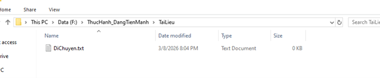
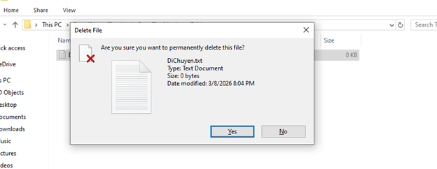
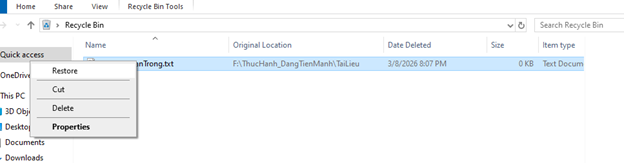
Qua quá trình thực hành bám sát 12 bước yêu cầu, em đã nắm vững các kỹ năng thiết yếu trong việc khởi tạo, phân loại, áp dụng chuẩn đặt tên tệp tin trên máy tính.